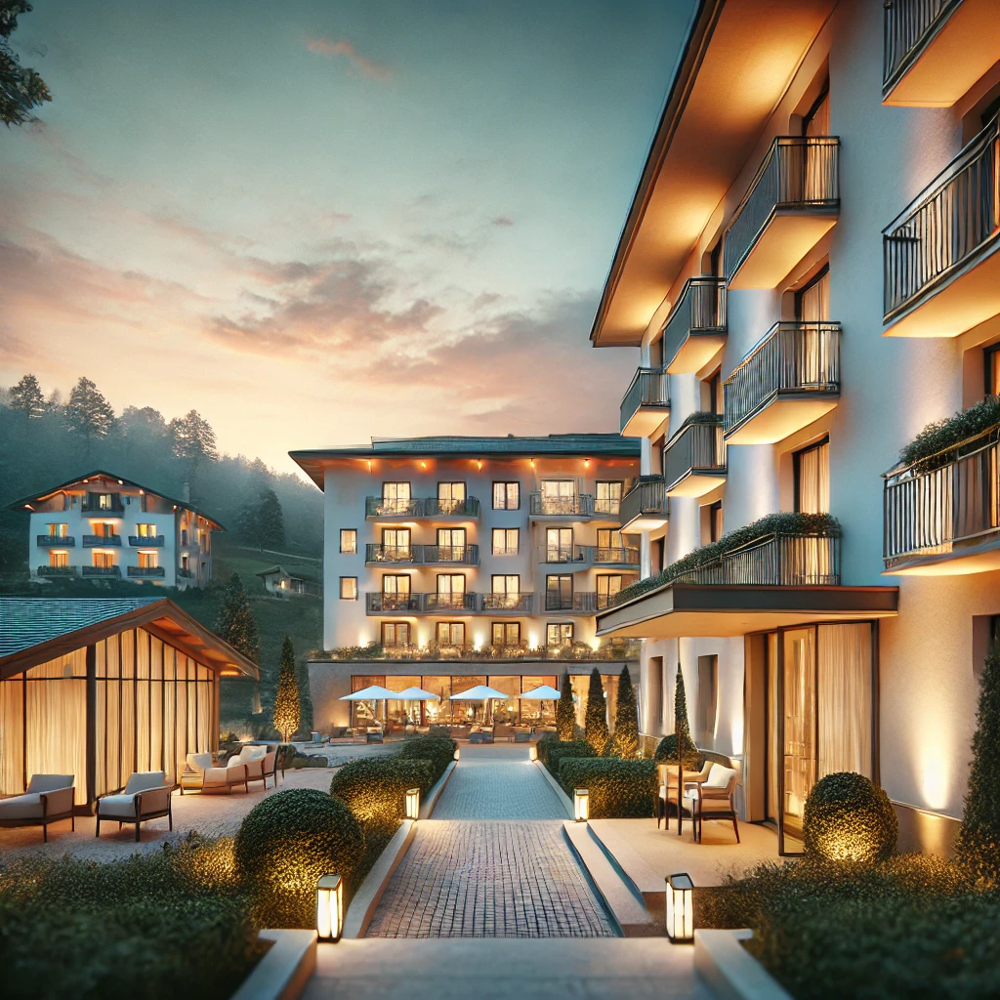

Welcome to Scorpion Hotel
Nestled in the heart of Abuja, Scorpion Hotel is more than just a place to stay—it’s an experience of comfort, luxury, and impeccable hospitality. Whether you're here for business, leisure, or a special occasion, we offer world-class amenities tailored to your needs. Our commitment to excellence ensures that every guest enjoys a memorable and seamless stay.
Our Story
Founded with a passion for hospitality, Scorpion Hotel has been a symbol of elegance and sophistication since its inception. Our journey began with a simple mission: to create a home away from home, where guests can relax and indulge in comfort. Over the years, we have grown into a trusted destination for travelers from around the world, offering personalized services that cater to every preference.
Luxury & Comfort Redefined
At Scorpion Hotel, we believe that luxury is not just about lavish spaces but also about the little details that make a difference. From our elegantly designed rooms and suites to our fine dining experiences, every aspect of our hotel is crafted to offer unparalleled comfort. Whether you're unwinding in our spa, enjoying a cocktail by the pool, or hosting an event in our grand ballroom, we ensure that every moment is extraordinary.
Our Commitment to Excellence
Hospitality is at the core of what we do. Our dedicated team of professionals is committed to providing outstanding service, ensuring that every guest receives personalized attention. We take pride in maintaining the highest standards, from cleanliness and comfort to innovative guest experiences. At Scorpion Hotel, your satisfaction is our priority.
A Destination Like No Other
Located in the heart of Abuja, our hotel offers breathtaking views and easy access to major attractions. Whether you're exploring the local culture, attending business meetings, or simply looking for a peaceful retreat, Scorpion Hotel provides the perfect blend of convenience and tranquility.
